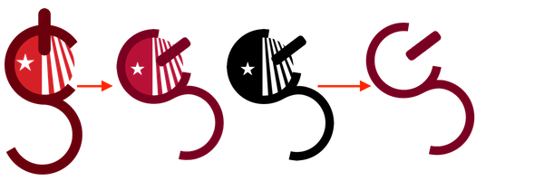

What Makes A Logo?
Creating a logo for the Stony Brook Computing Society was a task that required careful consideration. In this first iteration, both the C and S are utiized to create a single compund shape and then a power I/O button is thrown into the mix. Nevertheless, the message isn't really clear. The logo is more typographical in nature, the balance between the horizontal and vertical axis feels poor, and the negative space to colored space is heavily one-sided. Furthermore the Stony Brook red is much to strong for a logo of this nature. Through the iterations, some problems are solved, but others remain, and new ones arise. This isn't working.
Time for a radically different approach, utilizing zero's and one's to recreate the devices oh so common to the computing society. It even appears to resemeble an application wireframe. Nevertheless, it remains too busy, and negative space feels grossly unbalanced.
Through the iterations you can see the simplification. Losing the sides first. The watch is removed next. Its very time specfic (no pun intended) in the sense that it isn't something that really resonates beyond its short life span. It also has trouble scaling down among the other components. Finally, the negative space still appears unbalanced. adding the device "glare" allows for this space to be more evened out, and also provides the symbolism of the technology community that is always moving forward and reaching for the sky
This final iteration is illustrative, has a message, is recognizable, and has a better balance of negative space as well as its use of the vertical and horizontal axis. It scales fairly well and remains recognizable and can be colored in both black or white, or any mono color without degradation of the logo.